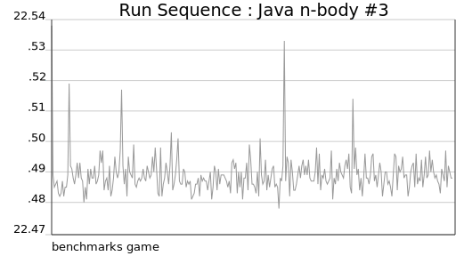
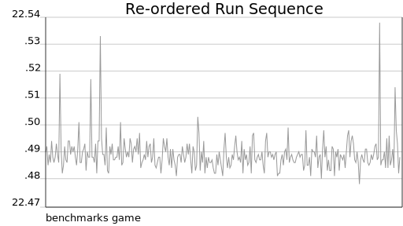

4chan
My question is if anyone here has any experience with simplistic benchmarking and could tell me which things to test for in order to get a simple idea of each language's general performance?
So explore!
Make run-sequence charts and check that the data is stable, without regularities or patterns.

Make charts of the same data randomly re-ordered and check for systematic differences.

Make lag charts and check. Make auto-correlation function charts and check.
Explore the data to find out what kind-of repetition and how much repetition is needed in the study.
In particular, don't assume that after an arbitrary warmup phase JIT compilers must improve program performance -- It ain't necessarily so.
In stark contrast to the traditional expectation of warmup
, some benchmarks exhibit slowdown
, where the performance of in-process iterations drops over time.
Initial comparisons
The 4chan poster needed to show comparisons between their academic research implementation and other programming language implementations. Like [pdf] diverse researchers, over the past decade, they may decide to use the benchmarks game as a convenient source of comparison programs.
Alternatively, for their initial assessment of compiler effectiveness, they may find the more-rigid less-permissive guidelines of Are We Fast Yet?
helpful.
If some of those guidelines seem arbitrary, perhaps that is less important than the possibility that there will be identifiable opportunities to improve performance.
The Real World
… doing effective research on the Java platform requires benchmarks that are both real and more complex than benchmark suites used to evaluate languages like C, C++, and Fortran.
… the JavaScript benchmarks are fleetingly small, and behave in ways that are significantly different than the real applications. We have documented numerous differences in behavior, and we conclude from these measured differences that results based on the benchmarks may mislead JavaScript engine implementers. Furthermore, we observe interesting behaviors in real JavaScript applications that the benchmarks fail to exhibit, suggesting that previously unexplored optimization strategies may be productive in practice.
Citation
Gouy, Isaac. The Computer Language Benchmarks Game. Web.<http://benchmarksgame.alioth.debian.org/>.